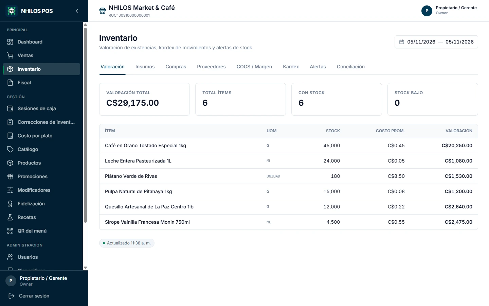
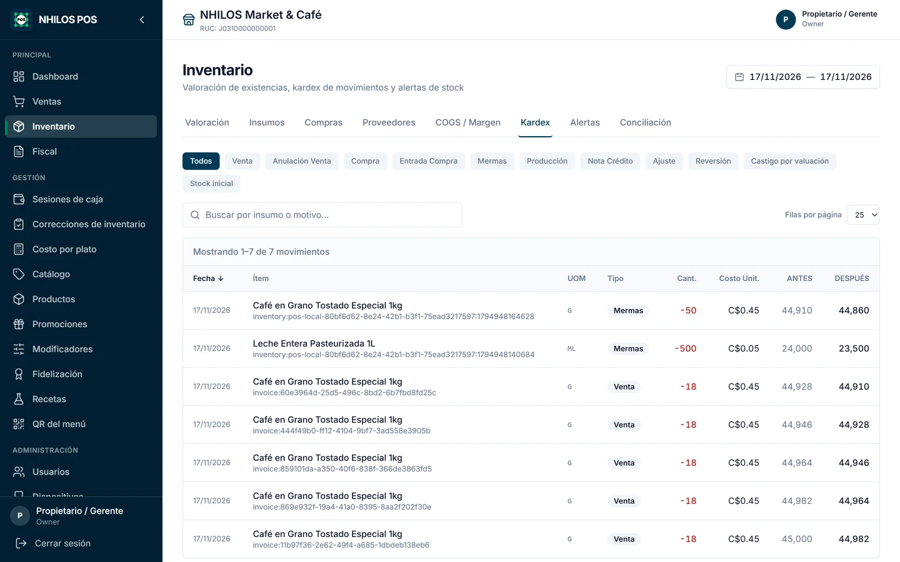

Inventario · Kardex · Merma · Nicaragua
Sistema de inventario en Nicaragua: cada venta descuenta lo que consumió
Cada venta descuenta lo que consumió, el plato por su receta, el producto de reventa por su stock, con kardex y costo promedio ponderado, conteos y merma teórica vs física. El marco que exige la ley (Ley 822 art. 44, Reglamento art. 33, NIC 2) explicado; la valuación fiscal la cierra tu contador.
El método desde la caja
¿Qué es NHILOS POS para tu inventario?
El inventario vive dentro del punto de venta: no es una hoja de cálculo aparte que alguien actualiza al final de la noche. Cada vez que se cierra una venta en mostrador, el sistema descuenta automáticamente lo que ese producto consumió, ya sea los ingredientes de un plato preparado o las unidades de un artículo de reventa. Así el stock refleja la operación real durante el turno y cada movimiento queda listo para cuadrar con tus compras y tus conteos físicos.
Productos que se preparan: recetas e insumos
Cada plato o bebida se vincula con sus ingredientes y rendimientos exactos, incluyendo subrecetas y órdenes de producción. Al vender una taza o un plato, el sistema descuenta cada insumo del kardex y actualiza el costo de la receta cuando entra una compra con un precio nuevo.
- Descuento automático de insumos por venta sin captura manual posterior.
- Subrecetas y pre-elaboraciones que pasan del almacén a cocina con su costo.
- Recálculo del costo de receta cuando ingresa un lote a costo distinto.
Productos que se revenden: stock simple
Para bebidas embotelladas, abarrotes o artículos que se compran y se venden tal cual, no necesitas armar recetas. Das de alta cada producto con su costo de compra, precio de venta, existencias y alertas de reposición; cada venta descuenta la unidad exacta al instante y alimenta el mismo kardex operativo.
De dónde sale el número
¿De dónde sale el costo? El kardex y el costo promedio ponderado
El costo que muestra el sistema no sale de una cifra estimada a mano: sale del kardex operativo. Cada compra registra la entrada con su costo real y cada salida se costea al costo promedio ponderado vigente en ese instante.
Compra registrada con costo
Al asentar una factura de proveedor, el insumo entra al kardex con cantidad recibida y costo unitario real.
Costo promedio ponderado
El sistema recalcula el costo unitario promedio combinando el saldo previo con el nuevo lote ingresado.
Venta, merma o producción
Cada salida descuenta stock dejando constancia del saldo anterior, el saldo posterior y el costo unitario vigente.
Valoración auditable
Los reportes de existencias y costos salen directamente de esos movimientos, sin ediciones silenciosas.
En el pack Retail el alcance publicado es kardex y costo promedio ponderado; el kardex valorizado y los reportes de margen corresponden al plan Pro.


Disciplina en tres capas
Lo que la ley exige a tu inventario (y cómo se cumple)
Para trabajar en orden con tu contador hay que separar qué ordena la norma, qué acostumbra hacer el rubro y qué ejecuta hoy el sistema sin disfrazar una cosa de la otra.
La Ley 822 (art. 44) exige valuar los inventarios al menor entre el costo y el precio de mercado, admite costo promedio, FIFO y UEPS, y requiere autorización por escrito de la Administración Tributaria para cambiar de método. El Reglamento de la Ley 822 (art. 33) exige inventario físico al cierre del año con listas firmadas y fechadas por hoja por quienes realizaron el conteo, además de registros disponibles ante la Administración. La NIC 2 (§23-25) exige identificación específica para bienes no intercambiables, una misma fórmula para inventarios similares y no admite UEPS.
La rotación por vencimiento (FEFO o FIFO por lote), los conteos cíclicos semanales de insumos críticos y las revisiones de porcionado son prácticas operativas del rubro recomendadas para reducir pérdidas, no obligaciones establecidas como ley por sí mismas.
NHILOS POS opera con costo promedio ponderado (sin método UEPS) y lleva el registro operativo de kardex, descuento por venta, sesiones de conteo y merma teórica vs física. Además, el sistema permite declarar un precio de mercado por insumo con fecha de vigencia, valuar al menor entre el costo promedio ponderado y ese precio declarado, y registrar el castigo contable correspondiente; si un insumo no tiene precio de mercado cargado, toma el último costo de compra como referencia. Hoy el sistema no registra autorizaciones escritas de cambio de método ni genera las hojas firmadas del inventario físico anual; la conformidad fiscal del caso concreto siempre la valida y firma tu contador.
Qué hace el sistema y qué le corresponde a tu negocio y a tu contador
- Kardex cronológico con costo promedio ponderado y saldos anterior y posterior por movimiento.
- Descuento automático por venta según receta de insumos o stock simple de reventa.
- Sesiones de conteo físico en operación y cálculo de merma teórica vs física.
- Control de lotes y fechas de vencimiento dentro del pack Retail.
- Valuación al menor entre costo y precio de mercado declarado por insumo con fecha de vigencia, con asiento de castigo registrado cuando aplica.
- Validar y firmar la conformidad fiscal de la valuación del periodo según el régimen del negocio.
- Mantener actualizados los precios de mercado declarados con su vigencia cuando corresponda.
- Tramitar y conservar la autorización escrita de la Administración Tributaria antes de cambiar de método de valuación.
- Ejecutar el inventario físico de fin de año con sus listas firmadas y fechadas por hoja por quienes contaron.
- Responder y presentar respaldos ante cualquier requerimiento de la Administración Tributaria.
Control sin frenar el mostrador
Merma teórica vs física, sin detener la operación
Saber cuánto falta en bodega no sirve de mucho si no puedes compararlo contra lo que realmente debiste haber gastado en ventas. NHILOS POS contrasta automáticamente ambos lados sin cerrar tu caja:
Lo que la receta indica que debió usarse
Sale de multiplicar las ventas registradas en caja por los ingredientes definidos en cada receta, más las mermas declaradas en turno por derrame, rotura o vencimiento.
Lo que el conteo real encuentra
Sale de las sesiones de conteo levantadas en cocina o almacén, registrando lo que realmente quedó disponible al cierre del periodo o de la semana.
Una sola operación en caja
¿Y la facturación? Cada venta descuenta y emite su comprobante
Packs por capacidad
¿Cuánto cuesta el control de inventario?
El inventario simple viene desde el inicio. Cuando necesitas kardex, recetas, conteos o lotes, activas el pack que responde a tu operación:
El kardex valorizado y los reportes de margen corresponden al plan Pro. Para revisar qué pack incluye cada plan mensual y todos los cargos publicados, puedes ver planes y precios de NHILOS POS o conocer primero qué es NHILOS POS: venta local-first.
Preguntas clave
Preguntas frecuentes sobre el sistema de inventario
¿Cómo descuenta el inventario al vender?
En el momento de cada venta, NHILOS POS descuenta el inventario en Nicaragua según el tipo de producto: los platos preparados descuentan insumos según su receta y los productos de reventa descuentan existencias en modo simple, sin hojas de cálculo al cierre del turno.
¿De dónde sale el costo?
El costo en NHILOS POS sale del kardex operativo en Nicaragua: cada entrada de compra queda registrada con su costo y cada salida se costea al costo promedio ponderado del momento, con saldo anterior y saldo posterior en cada movimiento.
¿El sistema cumple la Ley 822 para la valuación?
Para la valuación en Nicaragua, NHILOS POS valúa al menor entre el costo promedio ponderado y el precio de mercado que tu negocio declare por insumo con su fecha de vigencia, registrando el castigo cuando corresponde. Si no hay precio de mercado declarado, la referencia es el último costo de compra; la conformidad fiscal del caso concreto siempre la firma tu contador.
¿Puedo cambiar de método de valuación en el sistema?
La Ley 822 exige, en Nicaragua, autorización por escrito de la Administración Tributaria para cambiar de método de valuación, y NHILOS POS opera hoy con costo promedio ponderado sin prometer el registro de esa autorización dentro del sistema. Ese cambio y su respaldo corresponden a tu negocio junto con tu contador.
¿Qué es la merma teórica vs física?
NHILOS POS compara la merma teórica contra la física en Nicaragua cruzando el consumo que tus recetas indican por cada venta frente a las existencias reales levantadas en sesiones de conteo. La precisión de esa comparación depende de mantener las recetas bien definidas y registrar compras y mermas al día.
¿Sirve si no tengo recetas?
Sí: en Nicaragua, NHILOS POS funciona en modo simple para productos que se revenden sin receta, dando de alta cada artículo con su costo, precio de venta, existencias y alertas de reposición. Puedes operar en modo simple hoy y activar recetas después si tu negocio incorpora cocina.
¿Cuánto cuesta?
El control avanzado de inventario en NHILOS POS vive, en Nicaragua, en dos packs de capacidad, Retail y Cocina, a US$39 al mes cada uno según el plan elegido, mientras que el kardex valorizado y los reportes de margen corresponden al plan Pro. Puedes ver planes y precios de NHILOS POS para revisar la tabla completa.
El número visto en vivo
Solicita una demo con tu inventario real
Te mostramos el kardex, el descuento automático por receta y el flujo de conteo usando datos de demostración etiquetados. Al terminar la sesión recibes una cotización con alcance y cronograma real según tu operación.